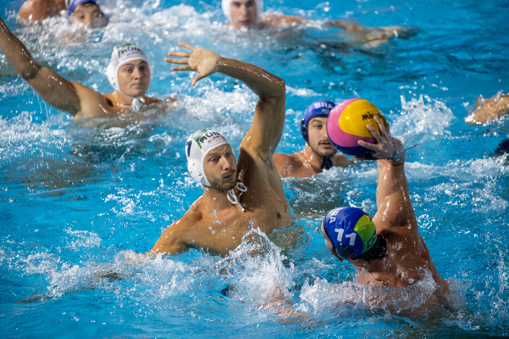

Vízilabda és Táplálkozás
A vízilabda, mint dinamikus csapatsport, nemcsak fizikai, hanem mentális kihívásokkal is jár, és különleges figyelmet igényel a megfelelő táplálkozásra. Ez lehetővé teszi a sportolók számára, hogy optimális teljesítményt nyújtsanak, miközben segíti a regenerálódást is. Az alábbiakban áttekintjük, hogyan hat a vízilabda a fizikai és mentális egészségre, valamint milyen táplálkozási szempontokat érdemes szem előtt tartani.
Fizikai egészség
- Teljes test edzése: A vízilabda intenzív mozgásai, mint az úszás és a gyors irányváltások, az egész test izomzatát igénybe veszik. A fehérjedús étrend különösen fontos az izmok regenerációja és növekedése érdekében.
- Ízületkímélő mozgás: A vízben végzett edzések kímélik az ízületeket, ezért a sérülésveszély is kisebb. A megfelelő kalcium- és D-vitamin-bevitel elengedhetetlen a csontok egészségéhez.
- Magas kalóriaégetés: Egy órás vízilabdázás nagy mennyiségű kalóriát éget el. A sportolóknak figyelniük kell a szénhidrátbevitelre, hogy fenntartsák energiaszintjüket a hosszú és intenzív edzések során.
- Koordináció és egyensúly fejlesztése: A folyamatos vízbeli egyensúlyozás és mozgás összehangolása fejleszti a koordinációt. Az omega-3 zsírsavak segíthetnek az agy optimális működésében, javítva a koncentrációt.
